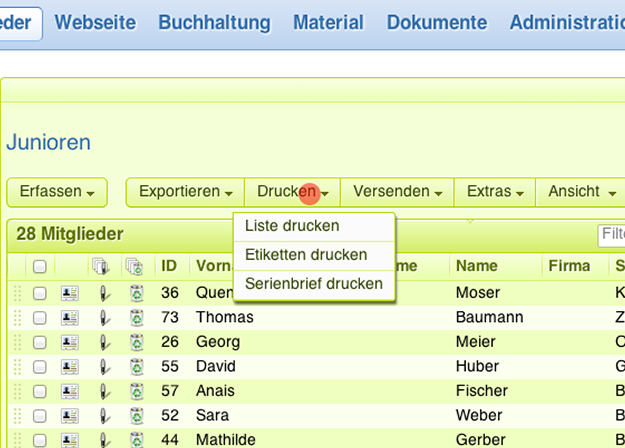
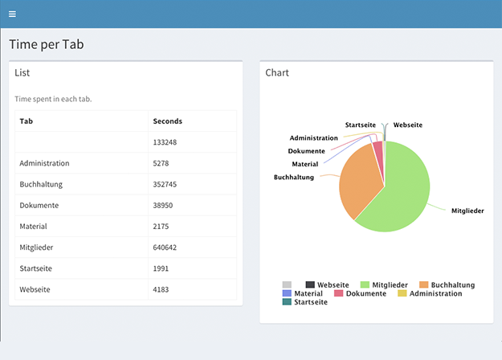
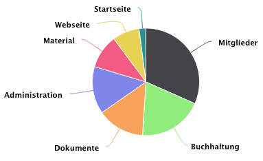
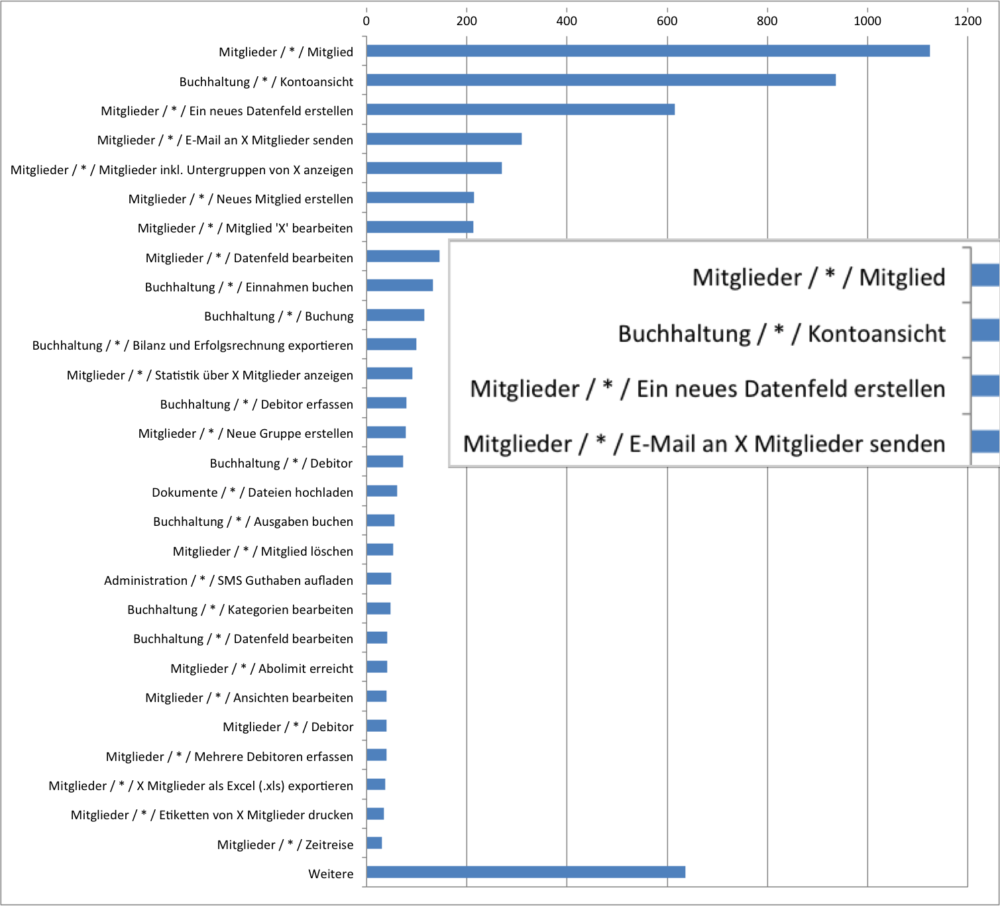
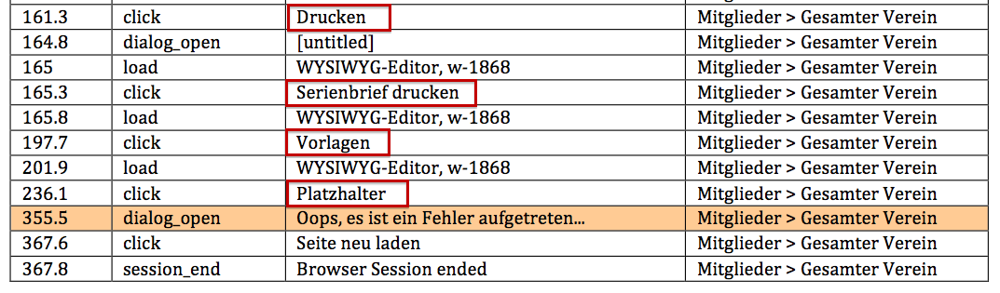
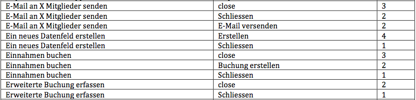
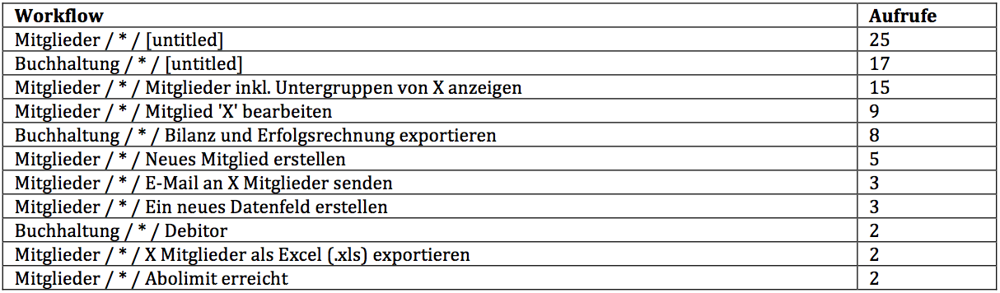
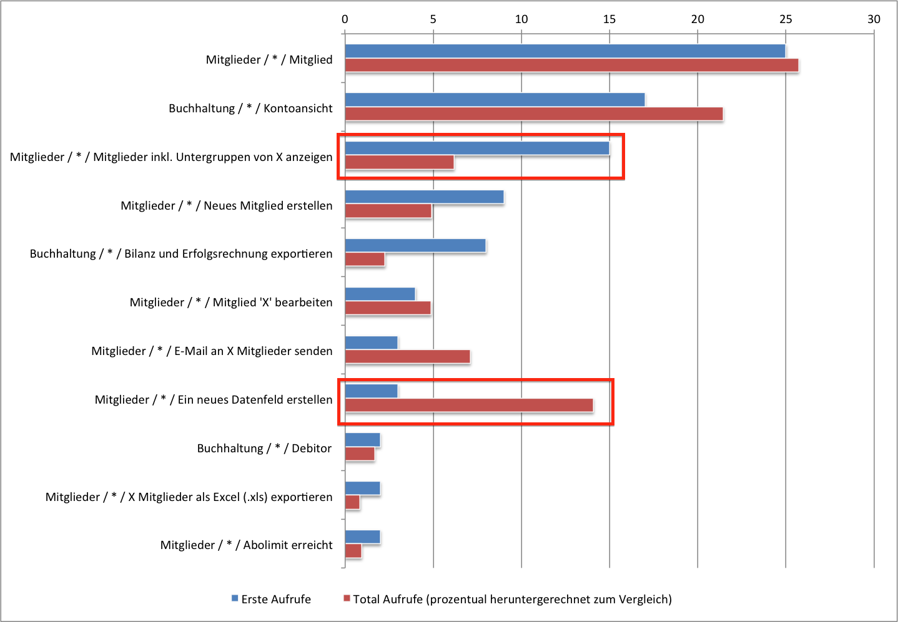

Usability Test-Tool für Web-Applikationen
Demian Holderegger
Bachelorarbeit Informatik, ZHAW, 2015
## Überblick
Problemstellung
Technische Lösung
Analyse der Fragestellungen
Demo
Problemstellung
Ausgangslage
Single Page Application (Webling)
Benutzung / Probleme unbekannt
Tracking mit Google Analytics
Aufgabenstellung
Usability Fragen ausarbeiten
Tracking Tool entwickeln
Test durchführen
Daten analysieren
Technische Lösung
Client Library
mit JavaScript die Eingaben abfangen
Daten und HTML an Backend senden
Logik um Workflows zu erkennen
Plugins für applikationsspezifisches
Backend
NodeJS · MongoDB · Screenshots

Dashboard
Statistiken & Logs

Fragestellungen
Auswertung der Fragestellungen
Frage 1
Welche Bereiche (Tabs) werden am häufigsten genutzt?

Frage 2
Welche Workflows werden in unserer Applikation genutzt und wie häufig?

Frage 3
Wo treten Fehler auf und was hat der Benutzer vorher gemacht?

Frage 4
Bei welchem Event brechen wie viele Benutzer den Workflow ab?

Frage 5
Was macht ein Benutzer als erstes wenn er die Applikation das erste Mal benutzt?


Fazit
✓ Benutzer-Tracking
✓ Workflows erkennen
✓ Screenshots
✓ Live Test
✓ Erste Auswertungen
✓ Viele neuen Ideen...